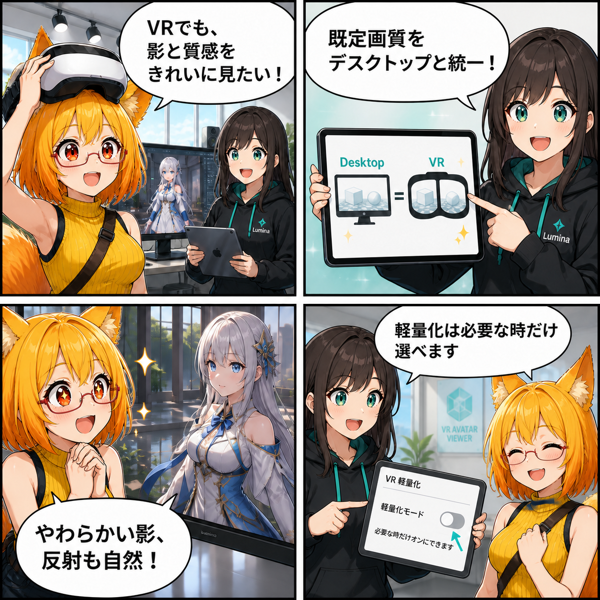

VRでもきれいが標準。描画品質の既定をそろえた日
VR時だけ画質を自動的に抑える従来の既定を見直し、デスクトップと同じ描画品質を標準にしました。
8154ee2（「アバター編集初期状態と水鉄砲の単一配置を統一」）。対象コミットは9件、集計差分は63ファイル、2,610行追加、434行削除でした。Viewer作業ツリーは確認時点でクリーンです。集計期間は 2026-08-19 03:00:00 JST から 2026-08-20 02:59:59 JST までです。
VRだから、最初から軽量化しない
これまではVRが有効だと、対応GPUであってもForward+をForwardへフォールバックする経路がありました。今回、その判定を「VRかどうか」ではなく、必要なGPU機能を利用できるかどうかに整理しました。
さらに、VR向けのライト・影制限と軽量ポストエフェクト上書きを既定で無効にしました。VRとデスクトップで同じ見た目を出発点にし、負荷を下げたい場合だけ利用者が軽量化を選べる方針です。
影・反射・奥行き感をプリセットへ反映
描画プリセットの適用範囲も広げました。Low以外ではソフトシャドウ、Reflection Probeのブレンディングとボックス投影を有効化し、VR軽量化が明示されていない場合はSSAOも利用します。Ultraではメインライトのシャドウマップ解像度を4096へ設定します。
スタジオ内に有効なReflection Probeがなく、Skybox反射も使えない場合は、環境反射用のフォールバックを用意する処理も追加しました。影だけでなく、材質の光沢や空間の奥行きが自然に伝わるよう、複数の描画要素を同じ品質方針へそろえています。
撮影時の品質も一時的に引き上げる
スクリーンショット撮影では、現在のURP設定を複製した撮影専用パイプラインを一時的に使うようにしました。撮影中はポストプロセスを有効にし、シャドウ距離を必要範囲へ絞りながら、メインライトのシャドウマップを最低4096に保ちます。
撮影後は元のパイプラインとカメラ設定へ戻すため、普段の表示設定を恒久的に書き換えません。「操作中の負荷」と「残す一枚の品質」を分けて扱える構成です。
同じ期間に進んだこと
同じ集計期間には、lilToon半透明材質のSurface復元、Surface Paintとテクスチャ処理の高速化、Player向けLight Bake復元、VRTXのZIP圧縮高速化、VRC cloneの一括VAB再変換、内部VBGコンバータのReflection Probe保存、アバター編集の初期状態と水鉄砲の単一配置も改善されています。
9件をまとめた集計差分は63ファイル、2,610行追加、434行削除でした。Viewerの作業ツリーは確認時点でクリーンで、未コミット差分を実績には含めていません。
4コマの裏話
4コマでは、VRでも影と質感をきれいに見たいろひに、ルミナがデスクトップと同じ既定画質へそろえたことを説明します。柔らかい影と自然な反射を確かめ、最後は「軽量化は必要な時だけ選ぶ」という新しい方針で締めます。
まとめ
VRを理由に一律で画質を落とさず、デスクトップと同じ描画品質を標準にしました。Forward+、ソフトシャドウ、反射、SSAO、撮影専用設定を一つの方針へそろえ、きれいな見た目から必要に応じて軽量化できるようにしています。
本日のひとこと： きれいを標準に、軽さは選択肢に。